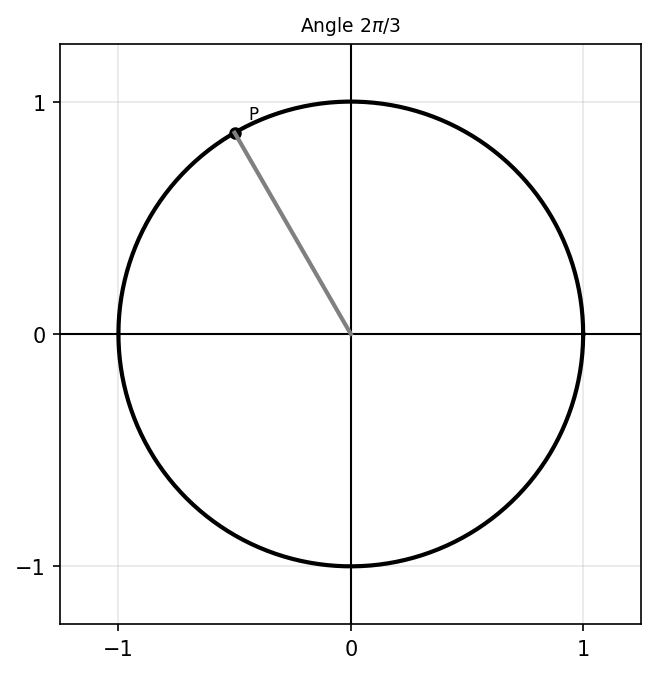
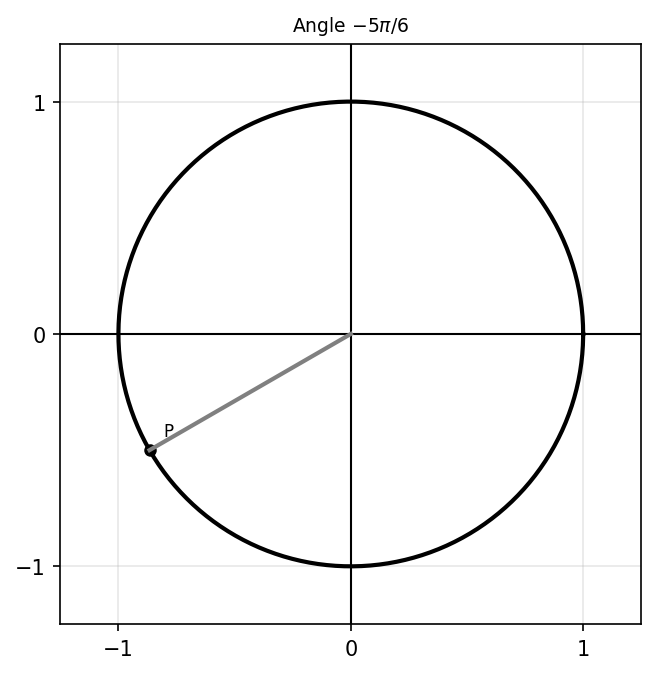
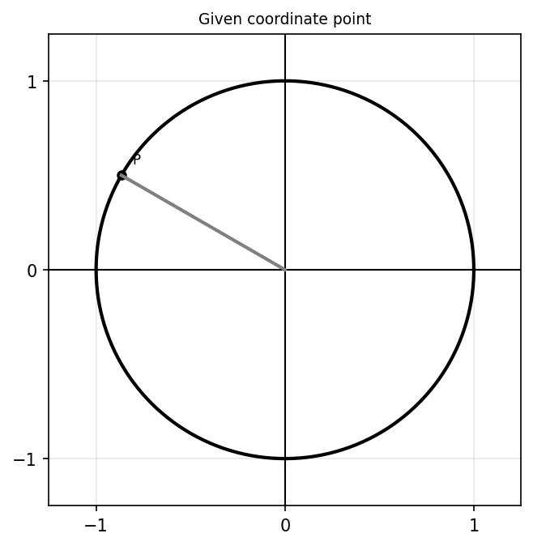
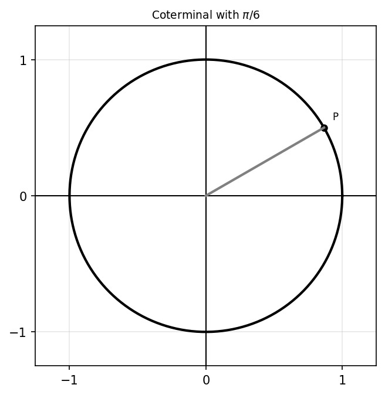
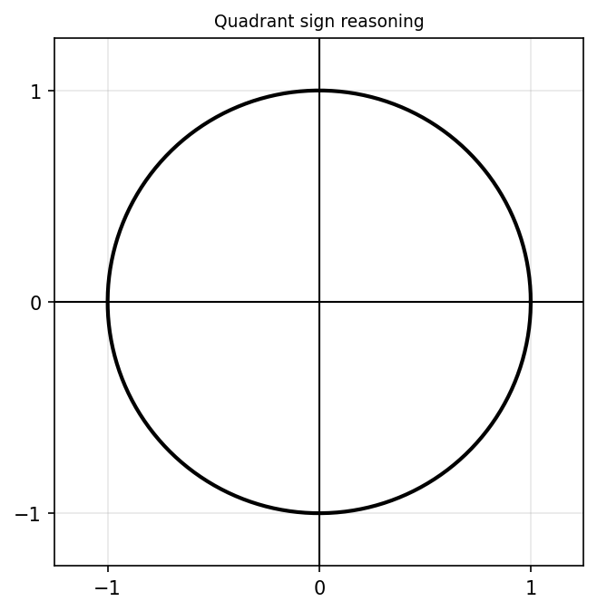
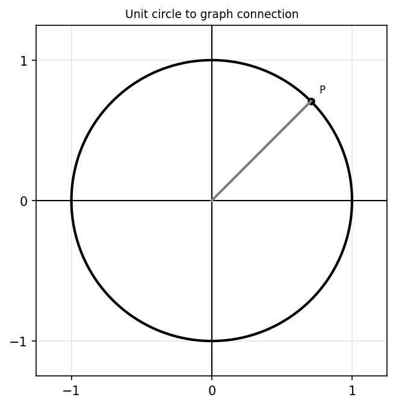
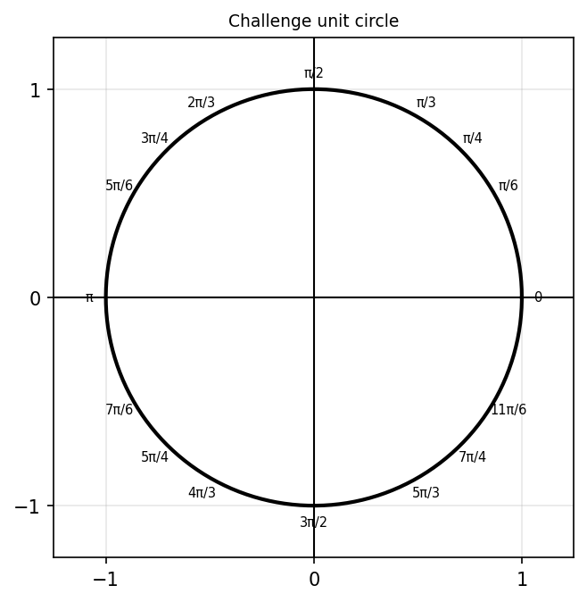

Convert \(60^\circ\) to radians.
Convert \(\frac{5\pi}{6}\) to degrees.
Find a positive coterminal angle for \(-\frac{3\pi}{4}\).
Find a negative coterminal angle for \(\frac{11\pi}{6}\).
State the coordinates on the unit circle for \(\theta=\frac{\pi}{3}\).
State the coordinates on the unit circle for \(\theta=\frac{5\pi}{4}\).
Evaluate exactly: \[\sin\left(\frac{\pi}{6}\right)\]
Evaluate exactly: \[\cos\left(\frac{3\pi}{4}\right)\]
Evaluate exactly: \[\tan\left(\frac{2\pi}{3}\right)\]
Evaluate exactly: \[\sin\left(\frac{7\pi}{6}\right)\]
Evaluate exactly: \[\cos\left(-\frac{\pi}{3}\right)\]
Evaluate exactly: \[\tan\left(\frac{5\pi}{4}\right)\]
Fill in the blanks.
Determine the quadrant for each angle.
State whether each value is positive, negative, or zero.
Sketch \(\theta=\frac{2\pi}{3}\) on the unit circle and determine the coordinates, sine, cosine, and tangent.

Sketch \(\theta=-\frac{5\pi}{6}\) and determine all six trigonometric functions.

Use the unit circle to evaluate \(\sin\left(\frac{11\pi}{6}\right)\), \(\cos\left(\frac{11\pi}{6}\right)\), and \(\tan\left(\frac{11\pi}{6}\right)\).
Evaluate exactly: \[\sin\left(\frac{13\pi}{6}\right)\]
Explain why the answer matches another special angle.
Evaluate exactly: \[\cos\left(-\frac{7\pi}{4}\right)\]
Evaluate exactly: \[\tan\left(\frac{9\pi}{4}\right)\]
A point on the unit circle has coordinates \(\left(-\frac{\sqrt3}{2},\frac12\right)\). Determine \(\sin(\theta)\), \(\cos(\theta)\), \(\tan(\theta)\), and the angle \(\theta\).

A point on the unit circle has coordinates \(\left(\frac{\sqrt2}{2},-\frac{\sqrt2}{2}\right)\). Determine all six trig functions.
Use a \(45^\circ-45^\circ-90^\circ\) triangle to explain why \(\sin\left(\frac{\pi}{4}\right)=\frac{\sqrt2}{2}\).
Use a \(30^\circ-60^\circ-90^\circ\) triangle to explain why \(\cos\left(\frac{\pi}{3}\right)=\frac12\).
Determine all angles in \(0\le\theta<2\pi\) such that \(\sin(\theta)=\frac12\).
Determine all angles in \(0\le\theta<2\pi\) such that \(\cos(\theta)=-\frac{\sqrt2}{2}\).
Determine all angles in \(0\le\theta<2\pi\) such that \(\tan(\theta)=\sqrt3\).
A student says, “\(\sin(\theta)\) and \(\cos(\theta)\) are always positive on the unit circle.” Use examples and the unit circle to explain why this is false.
Use the unit circle to explain why \(\tan(\theta)=\frac{\sin(\theta)}{\cos(\theta)}\).
Explain why \(\sin^2(\theta)+\cos^2(\theta)=1\) for every point on the unit circle.
Compare \(\sin\left(\frac{\pi}{6}\right)\) and \(\cos\left(\frac{\pi}{3}\right)\). Explain why the values are equal geometrically.
A student says, “Angles bigger than \(2\pi\) are not on the unit circle.” Respond with examples and reasoning.

Explain why \(\sin(-\theta)=-\sin(\theta)\) using unit-circle symmetry.
Explain why \(\cos(-\theta)=\cos(\theta)\) using unit-circle symmetry.
Compare the signs of sine, cosine, and tangent in all four quadrants. Then explain how the unit circle helps predict trig values without memorization.

A student evaluates \(\tan\left(\frac{\pi}{2}\right)=1\).
Use the unit circle to explain why \(\sin\left(\frac{5\pi}{6}\right)=\sin\left(\frac{\pi}{6}\right)\), but \(\cos\left(\frac{5\pi}{6}\right)\ne\cos\left(\frac{\pi}{6}\right)\).
A point on the unit circle has \(\sin(\theta)=\frac35\) and lies in Quadrant II. Determine \(\cos(\theta)\) and \(\tan(\theta)\). Explain how you know the signs.
Explain how the unit circle connects radians, coordinates, triangles, trigonometric functions, and graph behavior.
Create an angle whose sine is positive, cosine is negative, and tangent is negative. Then sketch it, give one radian measure, and explain how you know the signs.
Create a unit-circle problem where students must determine all six trig functions from one coordinate. Then solve your own problem.
Design an error-analysis problem involving coterminal angles.
Create a real-world periodic situation where radians are more useful than degrees. Explain why.
Design a unit-circle puzzle involving coterminal angles, exact values, and quadrant reasoning. Then provide the solution.
Create a comparison task between \(\sin(\theta)\) and \(\cos(\theta)\) where students must use geometry and symmetry to justify relationships.
A student claims, “Memorizing the unit circle is enough to understand trigonometry.” Critique this statement using examples involving coordinates, symmetry, and graph behavior.
Create a graph/unit-circle connection problem where students relate a point on the unit circle, sine/cosine values, and a point on a trig graph. Explain the connection.

Create a multi-representation problem involving radians, coordinates, trig values, and special triangles. Then solve it completely.
Design a challenge problem involving exact trig values, coterminal angles, symmetry, and all four quadrants. Then provide a full justification.
